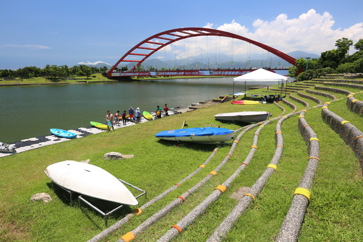
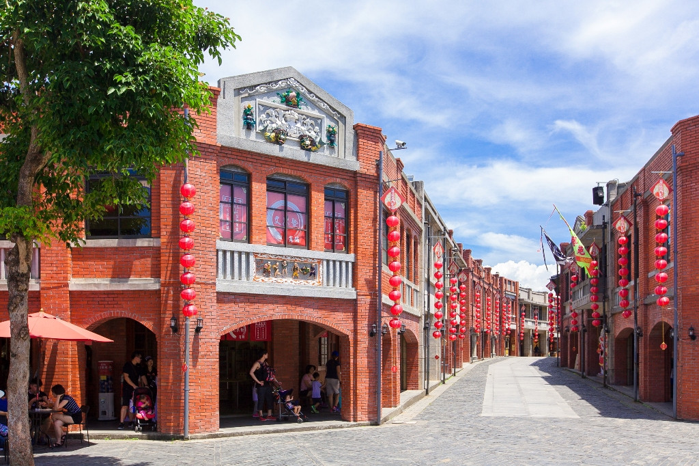
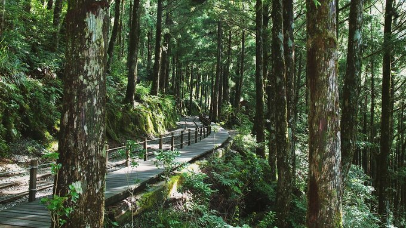
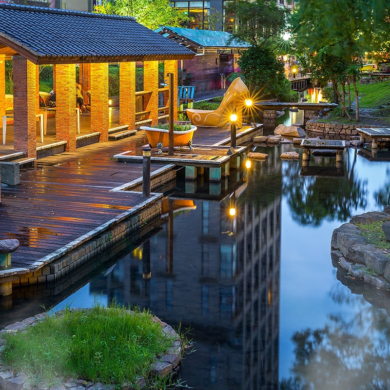

探索宜蘭
宜蘭是台灣北部的一個美麗城市，擁有豐富的自然景觀和文化遺產。以下是宜蘭著名的景點:

冬山河
冬山河為宜蘭第五大河，流經羅東、冬山、五結等三鄉鎮，在全長24公里的冬山河流域中，經規劃為以運動、遊憩、休閒多元功能的河濱遊憩區，共分上、中、下三段水域，各自展現不同的遊憩風貌，期望能成為「戶外水態博物園」。

宜蘭傳統藝術中心
傳統藝術，是民間生活藝術之美，先民薪傳文化之源。為了讓優美多樣的傳統藝術永續傳承，中心位於五結鄉冬山河下游，與親水公園僅一河之隔。園區佔地24公頃，依傳統戲曲、音樂、舞蹈、工藝及民俗雜技之需求籌建，21棟建築及景觀區兼具傳統與環保綠建築。藉由各項研究、保存、傳襲及展演計畫的推動，使傳統藝術觸角延伸到校園、呈現各地藝文風貌、落實到日常生活中，建立臺灣的文化精神代表。

太平山國家森林遊樂區
太平山國家森林遊樂區位於宜蘭縣大同鄉，素有『人間仙境』的美稱，面積廣達12,631公頃、標高1950公尺，隸屬於羅東林區管理處管理，全區包括有南湖大山山系、三星山山系、大霸尖山支脈，園區內以保留的原始林木包括紅檜、扁柏、鐵杉等聞名，曾與阿里山、八仙山並列為台灣三大林場。

礁溪溫泉
礁溪溫泉屬於碳酸氫鈉泉，富含鈉、鎂、鈣、鉀、碳酸離子等化學成份，是臺灣少見的平地溫泉。 此泉色清無臭，湧到地表時約為58度C，洗後光滑柔細不黏膩，由於富含礦物質，因此不論是浸泡、沐浴或經處理後成為礦泉水飲用，都對身體健康極有幫助。 到礁溪泡溫泉，已成為旅客到此一遊的重要行程。